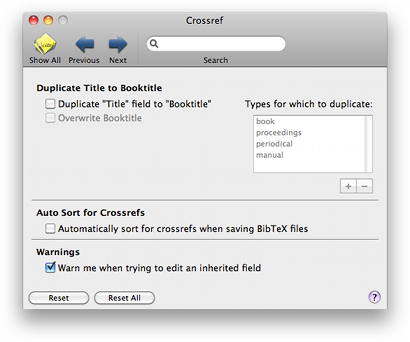

Crossref Crossref
Crossref CrossrefThe Crossref pane lets you control some aspects of the Crossref support.

Duplicate Title Field to Booktitle Field for Crossreferenced Types: In a potential parent item, BibDesk can copy the `Title' field over to its `Booktitle' field, when you create or edit it. This is a workaround for a BibTeX problem, and was suggested by BibDesk users. BibTeX uses the `Title' field of an `incollection' and ignores the `Title' field of the corresponding `book' type (the parent item). Copying allows any child item to get all of the necessary information from its parent reference.
Since this alters your bibliography, the features is off by default, even though existing entries won't be overwritten.
Similarly, a hidden preference exists to write certain fields as an empty string, and is specified
in the Terminal (excluding outer double quotes) as
"defaults write -app BibDesk BDSKFieldsToWriteIfEmpty '(Key)'",
where the value in parentheses can be a comma separated, capitalized list of field names. These
must also be default fields in the Defaults preference pane. This can be used to prevent an item
from inheriting its parent value.
Overwrite the Booktitle: Always overwrite the `Booktitle' field when duplicating the Title field, even if it is not empty.
Types for which to duplicate: Duplication will only occur when editing the types in this list, which are considered the potential parent items. Use the "+" and "-" buttons below the list to add and remove items. Note that you need to click the checkbox to enable duplication before you can edit the list.
Automatically Sort for Crossrefs when saving BibTeX files: When you select this option, BibDesk will automatically place parent items at the end of your file, as required by BibTeX. If you use CVS to track changes to your bibliography, be aware that this feature may introduce a large number of differences in your file!
Warn me when trying to edit inherited fields: If this option is enabled, BibDesk will warn you when you try to edit an inherited field.